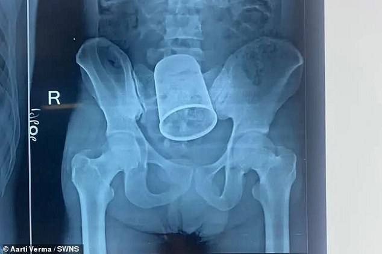

Fake News Test
Introduce some news that seems fake but real.
1. British man with penis on his hand:
A 47 year old man named MacDonald has had a penis on his arm for six years. He had a perineum infection for years without realizing the consequences.
His penis gradually turned black as the infection spread to other areas of his body, including his fingers and toes. His penis ''simply dropped off on the floor''one day.
Malcolm, who is right-handed, had a skin flap removed from his left arm and rolled to make a "penis" with its own blood arteries and nerves.
2. Brazil "husband" cheated on "his" wife:
This lady from Brazil felt heartbroken after seeing her handmade rag doll husband sneaking into a hotel with another woman while she was taking care of their son.
37 years old Ms Moraes has a son Marcelinho after she married to her husband, the rag doll Marcelo.
"At first, I thought she was lying, but then I started looking through his phone and I saw the conversations, which made me sure he was cheating," the woman further said.
Ms Moraes said her husband "kept denying everything" but said he still loves her and begged for forgiveness.

3. Steel cup in man's rectum:
Doctors at a state-run hospital in Odisha have successfully removed a steel glass from the rectum of a man.
The object was inserted inside the anus of one Krushna Chandra Rout nearly 10 days ago by his friends a drunken condition following a booze party in Surat, Gujarat.
Despite experiencing acute stomach pain, Rout refrained from revealing to anyone about the steel inside his anus owing to the stigma attached to the incident.
The object was around 8cm in diameter and 15cm long, news agency PTI reported.